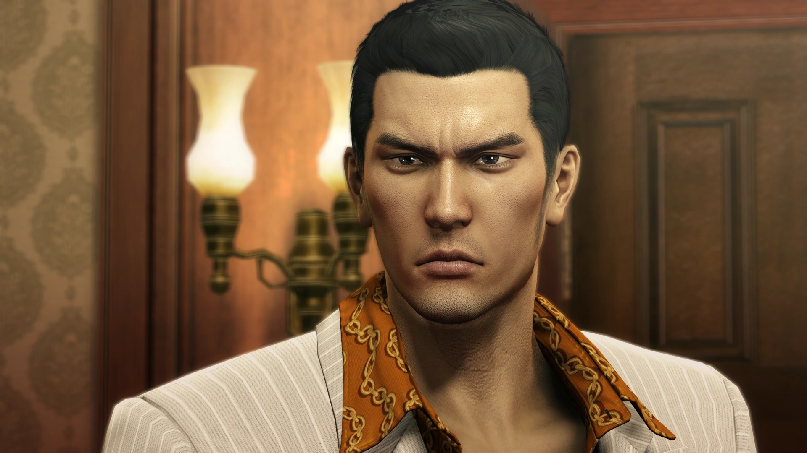
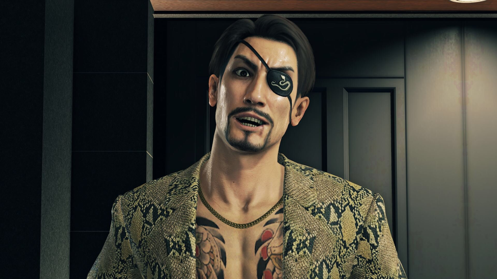
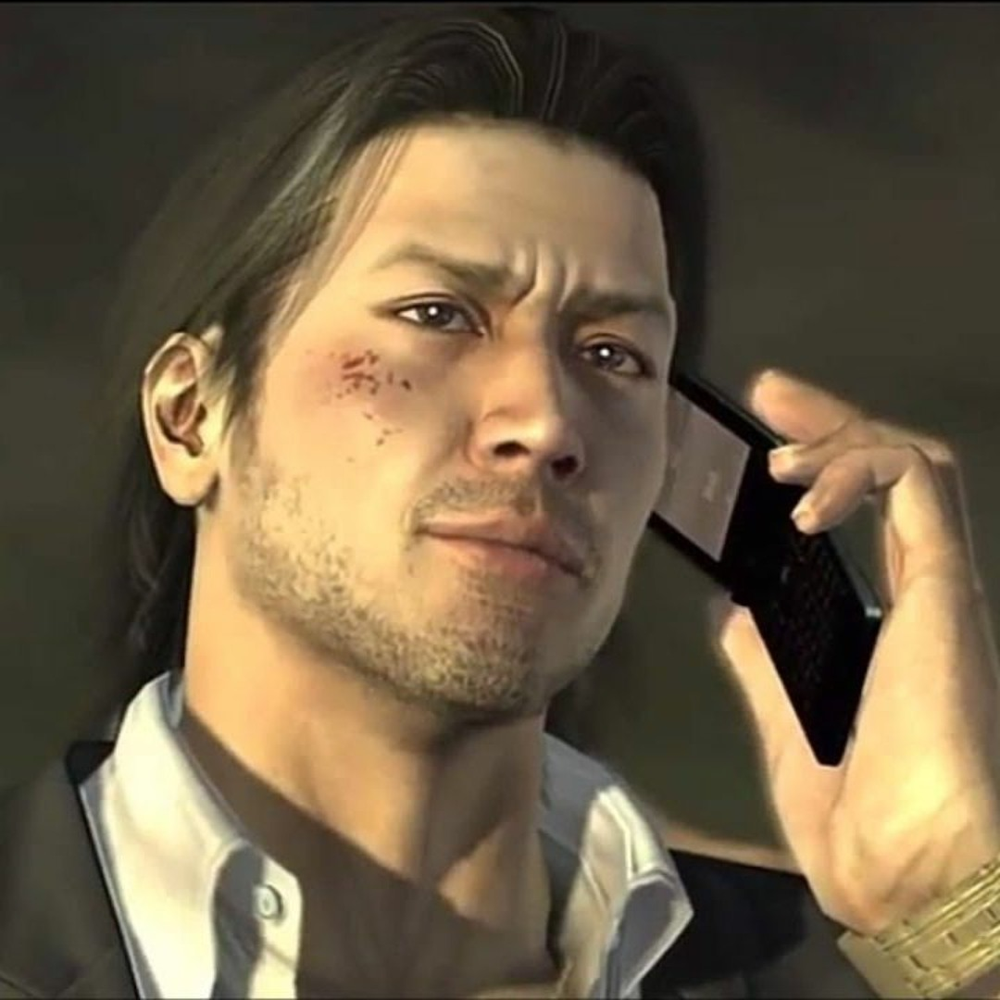
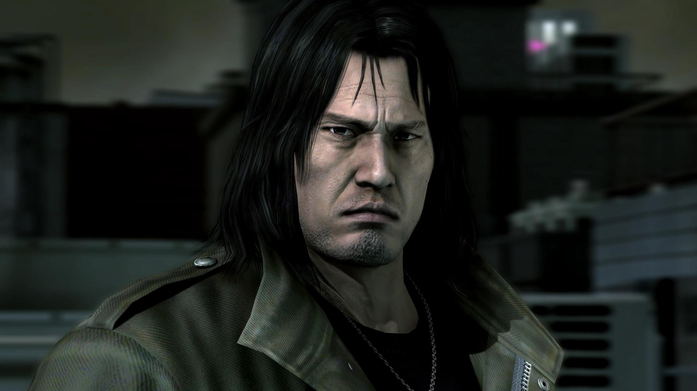
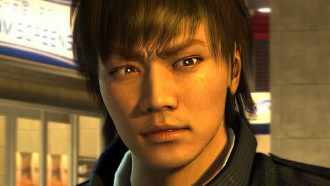
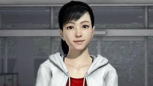
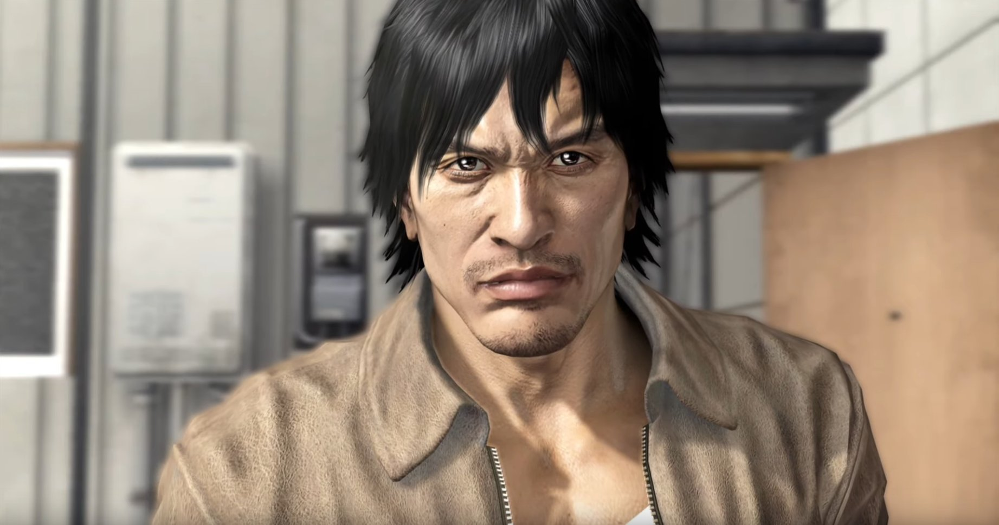
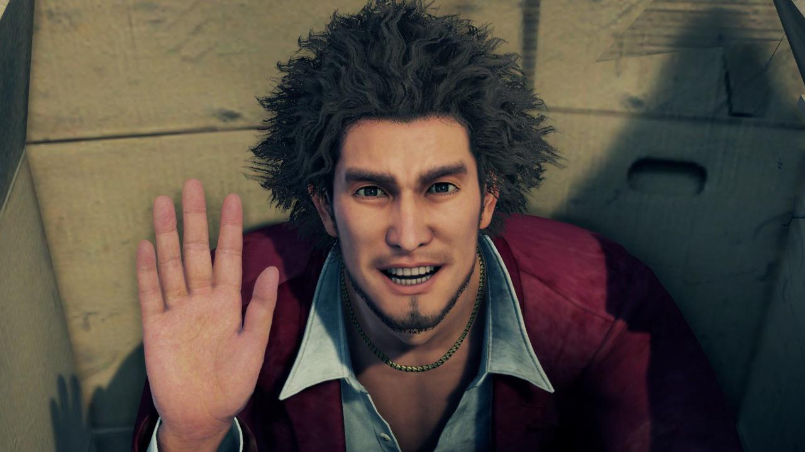

Characters
The characters in Yakuza are some of my favorites out of all the games I have played. You see a great majority of them in every game throughout the series so you see how everyone grows and you get to create a connection to them. I can sit here and talk about them from the main, or playable, characters to the more important and loved characters but this page would be a dictionary. So I have decided to just include the people you play as and maybe a few fan-favorite characters. (Outside of the Like a Dragon games because while they still fall into the main storyline, the game is played like an RPG, which includes a lot more people introduced and playable.)
Kazuma Kiryu
This is who the series starts with and where almost all the action unfolds around. We follow him all the way from age 20 in Y0 all the way to 55, playable in all the games except one but I could be wrong on that. After making the games from Y1 to Y5, the company made the prequel Yakuza 0, giving the backstory of Kiryu. He is a very likeable character so the connection people draw to him is even more as we see him grow into his maturity and every emotion you can think of, we have seen and experienced with him.
Goro Majima
Majima is an interesting character because for one, he was not playable at first. He is essentially Kiryu’s rival, and we are introduced to him in the first game, Yakuza 1 on the PS1. A fun fact about Y1 on the PS1 is the English voice actor is Mark Hamill. Outside that fact, the fans loved Majima’s crazy character so much that he is made playable for the first time in Yakuza 0, where we see how he turned into the insane person he is. Truthfully if you did not like Majima before, this along with being able to play him could make anyone into a fan.
Shun Akiyama
First playable and introduced in Yakuza 4, he is the owner of a credit company called Sky Finance. Through this company he is named “The Lifeline of Kamurocho” because in these times of violent and tricky loan sharks, Sky Finance will give out a loan of any amount if you pass a test that Akiyama decides on. The tests vary from person to person and are usually a test of character of some sort.
Taiga Saejima
Also playable and introduced for the first time in Yakuza 4, he is Majima’s sworn brother. One look and you can tell he is basically a big bear, but the time spent playing with him you get to see he is much more than just insanely strong. You also get more of a real-life survival feeling with Saejima through the things you end up doing with him, an example being hunting.
Masayoshi Tanimura
First introduced and playable in Yakuza 4, the last of the 4 playable characters in this game, he is also only in this game out of all the characters. Tanimura is an officer for the Tokyo Metropolitan Police Department and through him we get to see a side of Kamurocho that we cannot see prior, a place that only foreigners were welcome. We also get to experience a new combat playstyle very different from his hard-hitting counterparts. A tamer, police-like style that lets you arrest people, not really arrest but the enemies are down for the count afterwards.
Haruka Sawamura
Haruka is firstly playable in Yakuza 5 but we follow her just like Kiryu from the beginning. We find her as a 9-year-old child and she is basically Kiryu’s niece/daughter from then on. I personally enjoy Haruka’s character a lot because you get to see how this little girl grows even under the influence of big honcho Yakuza bosses. Her playstyle is also very different from everyone else because obviously a 16-year-old girl with, practically, the strength of all of her “uncle’s” families behind her, instead she is an idol. Haruka is someone who you just have to follow to get her story because this would be a lot longer.
Tatsuo Shinada
Introduced and playable in Yakuza 5, Shinada is a former pro baseball player for the Nagoya Wyverns, based on the real team in Nagoya. He is the first “regular” character we play as, as he is just a poor man trying to survive when we are introduced to him. We get to enjoy a more freeing experience of Nagoya with Shinada and his side content involves a different approach, I would say more closely to how an MLB game would be played. There isn’t much to say without spoiling but Shinada’s section did not slack compared to the others.
Ichiban Kasuga
Our main character in the Like a Dragon installments, these still fall under the main games but instead of following Kiryu. Ichiban is our focus. Ichiban is a light-hearted and very dependable person who likes to see things in a “video game RPG” form, which turned out familiar beat’em up experience into an RPG. Going through the games and watching Ichiban with his cliché-like, “never give up” attitude as he takes on enemies’ way out of his league, with a party to help, is something you must experience and take in for yourself.